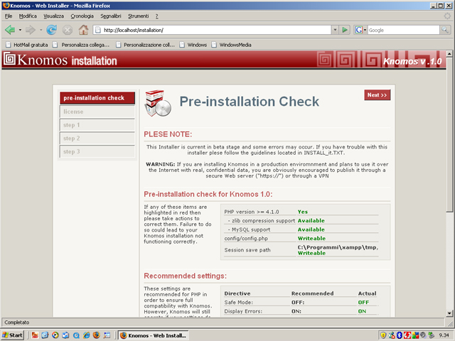

Per installare Knomos sul tuo computer è nacessario scaricare l'immagine iso dalla pagina di download di knomos.altervista.org
Successivamente masterizzare l'immagine scaricata e, dopo aver inserito il cd nel lettore, comparirà la finestra di autorun
Premere il punsante "softwarel" per avviare l'installazione del server Apache e Mysql
A questo punto inizierà l'installazione di XAMPP
Terminata l'installazione di XAMPP fermare i servizi Apache e MySql e dal menù programmi selezionare php switch per settare il php alla versione 4, seguendo le istruzioni a video
A questo punto riavviare i servizi Apache e Mysql e dall'autorun del Cd avviare l'installazione di knomos e successivamente il progranna 7zip.
Una volta eseguite tali operazioni, aprite il browser e scrivete http://localhost/phpmyadmin per creare i database del programma.
Nella finestra "crea nuovo database" inserire il nome del database "knomos_db" e, successivamente, " knomos_db_history".
Fatto ciò digitate sul browser l'indirizzo http://localhost e seguite le indicazioni come in figura:
